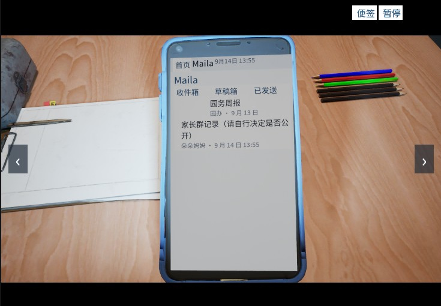
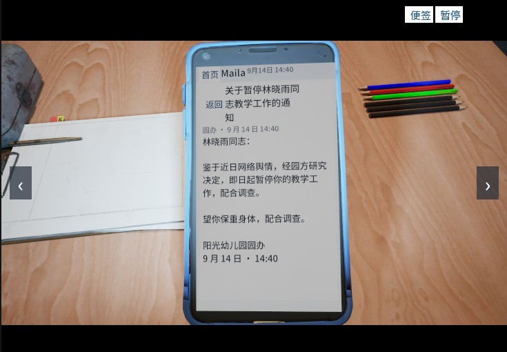

设计概念
网暴的道德重量来自「发言者看不到受害者的屏幕」。传统叙事游戏（Orwell、全网公敌）让玩家当监控者或旁观者；《涟漪》把这种信息不对称直接翻转成交互机制——玩家必须是参与者。每一次发言都是博弈：热度、立场、证据、措辞，全部会被对面的屏幕如实接收。
由此闭环出本作的核心循环：
侦查（搜集证据）→ 发言（唯一武器）→ 切屏看涟漪（←/→ 切换设备）→ 世界更新（旧发言继续发酵）
设计支柱
- 每个字都有重量——发言是唯一的武器，也是唯一的责任来源
- 屏幕即人物——全作无角色立绘，壁纸 / 图标 / 通知音就是人物侧写
- 无人是纯粹的恶人——施暴者也在自己的生活里，立场由处境而非标签决定
- 不可撤回——删评无效，截图早已扩散；互联网没有橡皮擦
- 不适但克制——语义施压写法，无脏话、无真实人脸，用不适感而非猎奇
核心机制：设备切换
设备切换是核心机制而非装饰。5 台设备按章节阶梯解锁——玩家笔记本 → 被网暴者晓雨的手机 → 施暴者刀哥的电脑 → 旁观者陈同学的手机 → 方女士的平板，5 个平台级 App（泡泡 / 微语 / 聚点+知料 / 云屉 / Maila）内容互通。
- 解锁条件绑定玩家行为：发出第一条评论才解锁晓雨的屏幕，溯源追查才解锁刀哥的电脑——新视角是你动作的直接后果
- 第 4 章网暴反噬直接落在玩家自己的笔记本上：玩家只有一块屏幕，反噬来临时无处可躲——封闭感即压迫感

叙事结构：章节钉子
6 章 × 3 波次的两级结构：章内波次是软触发（热度阈值释放内容），章节钉子是硬触发——每章一个「必然发生、不可跳过」的世界状态改变（停职 / 完整截图流出 / 回应视频 / 被扒 / 热度归零）。
- 玩家行为不决定钉子是否发生，只决定其形态（A / B / C）——节奏可控，选择仍有重量
- 沉默也是一种被记录的形态
- 玩家全部历史发言跨章继承，旧发言在后续章节继续变形发酵
- 立场定调采用确定性分级：「未知全貌不予置评」做底色，「沉默即共谋」降级为特例——只有握证不发才被审判
伦理红线（设计硬约束）
- 不复刻真实仇恨话术；不做说教
- 无真实人脸；贴图零烘焙文字，词库集中在可替换的数据表中
- 第 4 章（玩家被扒）可跳过；结尾提供真实求助资源
实现与验证
Unreal Engine 5.8 全蓝图实现（零 C++），已达成：
- 第一章完整可玩：正式节奏 30–35 分钟——开场、三波次推进、附图选择与逐条打码、发言四维度结算（证据门槛 / 打码 / 对人 / 真实热度）、强制阅读演出、数字结算全部落地
- 32 项 PIE 自动化回归通过，另有章节跳转 16 项、主菜单与设置 37 项回归；每次改动跑脚本验收、截图留档
- 数据管线：章节文案 JSON → GameInstance Map 键值，运行时 504+ 键；策划数据与蓝图逻辑解耦
- AI 美术管线：Tripo 生成 + 人工修型的「玩具剧场」低模风格，47 条可复制提示词库 + 设备比例锁规范
- 主菜单 / 设置（音量 / 分辨率 / 窗口模式持久化）与第 1–6 章跳转框架完成，后续章节内容开发中

关键设计决策（ADR 节选）
项目全程用 Architecture Decision Record 留档，共 27+ 篇，摘录：
- ADR-001 左右键切换设备的多视角叙事架构——核心机制地位的确立与「偷窥式」方案的否决
- ADR-003 立场定调：确定性分级——从「沉默即共谋」到「未知全貌不予置评」的修订
- ADR-004 章节钉子结构——拒绝把叙事游戏降级成 checklist 的任务驱动
- ADR-006 美术方向：玩具剧场与 Tripo 管线
- ADR-010 数据层 Map 键值与全脚本蓝图生成
- ADR-020 世界内文本规范与「去上帝视角」修订——48 处文案修正
- ADR-022 发言四维度生效与按帖措辞